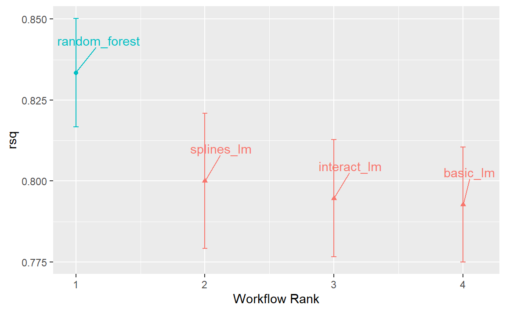
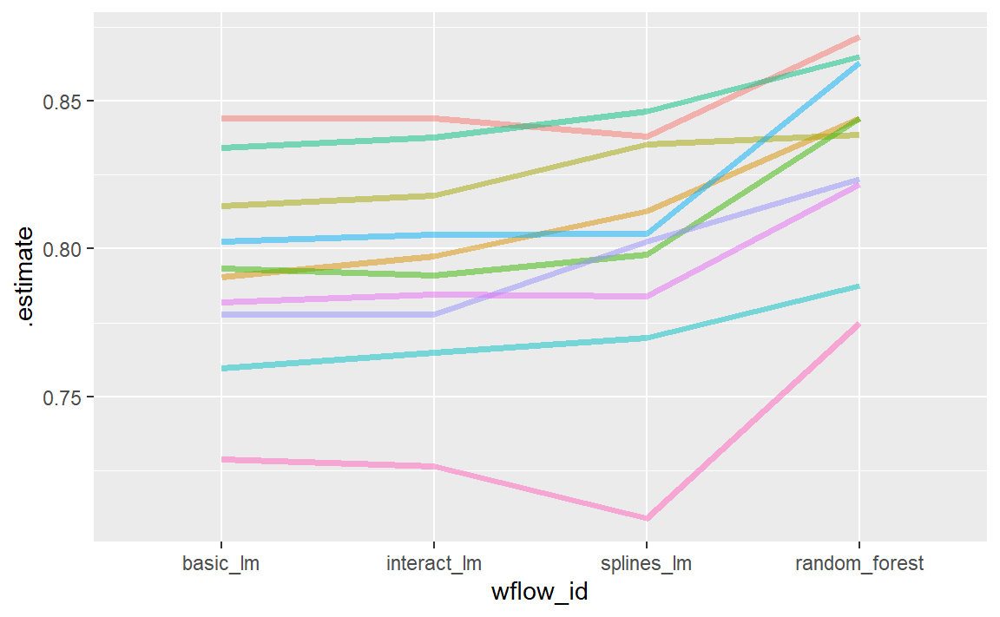
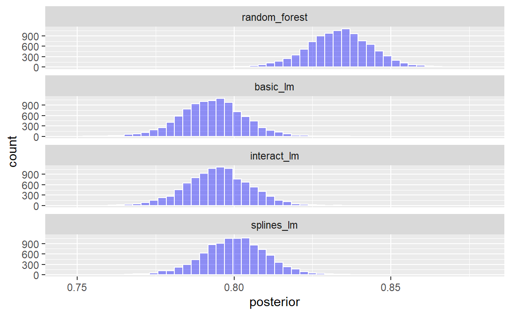
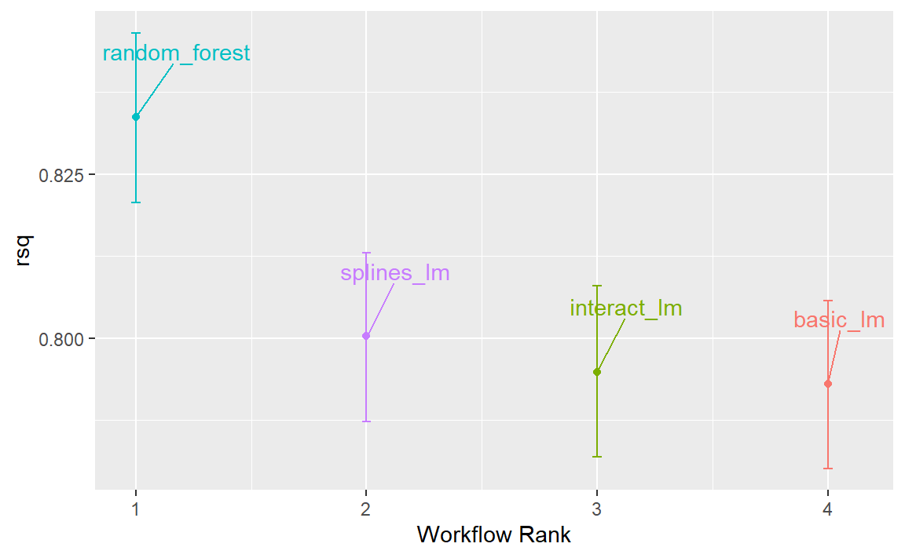
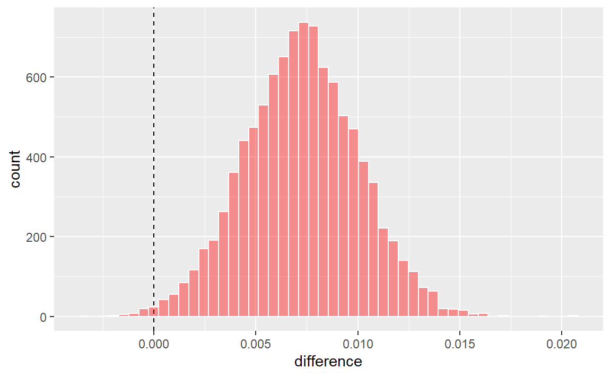
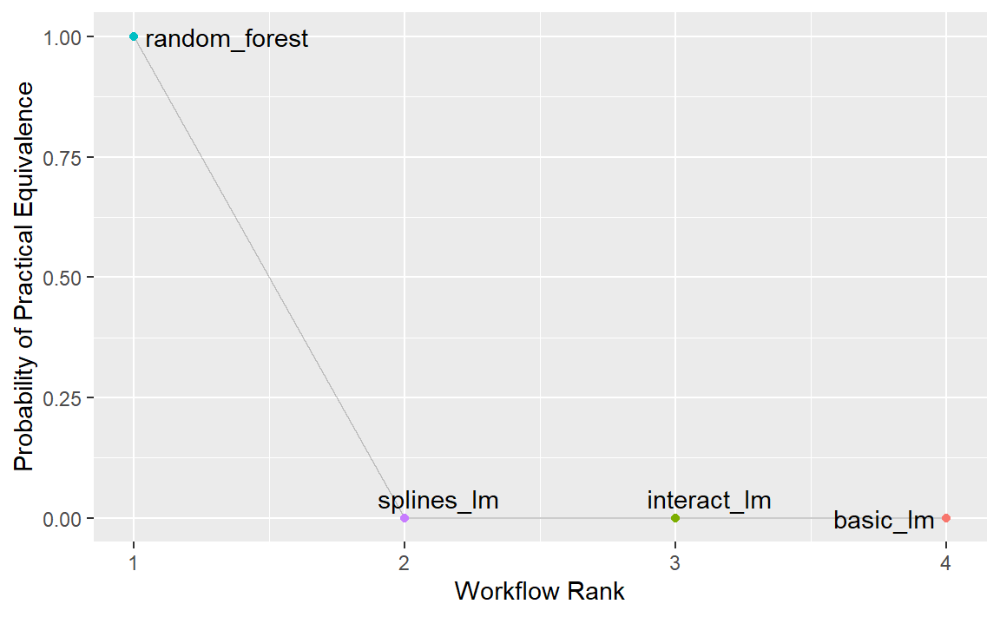
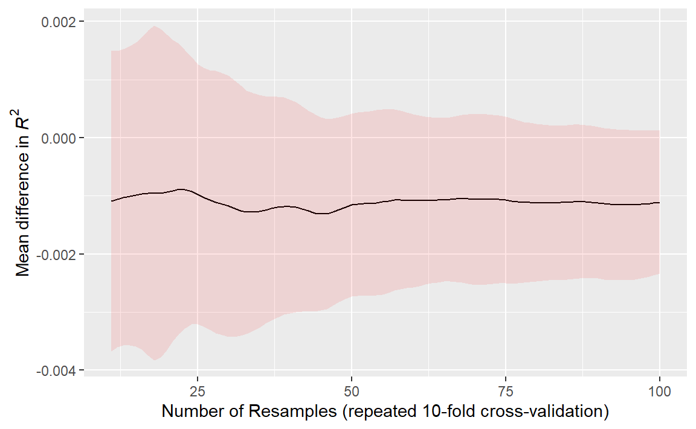

library(tidymodels)
#> ── Attaching packages ─────────────────────────────────── tidymodels 1.4.1 ──
#> ✔ broom 1.0.9 ✔ recipes 1.3.1
#> ✔ dials 1.4.2 ✔ rsample 1.3.1
#> ✔ dplyr 1.1.4 ✔ tailor 0.1.0
#> ✔ ggplot2 3.5.2 ✔ tidyr 1.3.1
#> ✔ infer 1.0.9 ✔ tune 2.0.0
#> ✔ modeldata 1.5.1 ✔ workflows 1.3.0
#> ✔ parsnip 1.3.3 ✔ workflowsets 1.1.1
#> ✔ purrr 1.1.0 ✔ yardstick 1.3.2
#> ── Conflicts ────────────────────────────────────── tidymodels_conflicts() ──
#> ✖ purrr::discard() masks scales::discard()
#> ✖ dplyr::filter() masks stats::filter()
#> ✖ dplyr::lag() masks stats::lag()
#> ✖ recipes::step() masks stats::step()
tidymodels_prefer()
data(ames)
ames <- mutate(ames, Sale_Price = log10(Sale_Price))
set.seed(502)
ames_split <- initial_split(ames, prop = 0.80, strata = Sale_Price)
ames_train <- training(ames_split)
ames_test <- testing(ames_split)
basic_rec <-
recipe(Sale_Price ~ Neighborhood + Gr_Liv_Area + Year_Built + Bldg_Type +
Latitude + Longitude, data = ames_train) %>%
step_log(Gr_Liv_Area, base = 10) %>%
step_other(Neighborhood, threshold = 0.01) %>%
step_dummy(all_nominal_predictors())
interaction_rec <-
basic_rec %>%
step_interact(~ Gr_Liv_Area:starts_with("Bldg_Type_"))
spline_rec <-
interaction_rec %>%
step_ns(Latitude, Longitude, deg_free = 50)
preproc <-
list(
basic = basic_rec,
interact = interaction_rec,
splines = spline_rec
)
lm_models <- workflow_set(preproc, list(lm = linear_reg()), cross = FALSE)
lm_models
#> # A workflow set/tibble: 3 × 4
#> wflow_id info option result
#> <chr> <list> <list> <list>
#> 1 basic_lm <tibble [1 × 4]> <opts[0]> <list [0]>
#> 2 interact_lm <tibble [1 × 4]> <opts[0]> <list [0]>
#> 3 splines_lm <tibble [1 × 4]> <opts[0]> <list [0]>11 Comparing Models with Resampling
一旦我们创建了两个或更多模型，下一步就是对它们进行比较，以了解哪个模型最好。在某些情况下，“比较”可能在模型内进行——使用不同的特征或预处理方法对同一个模型进行评估。另外，模型间的比较更为常见，比如我们在第10章中对线性回归模型和随机森林模型进行的比较。
无论是哪种情况，结果都是每个模型的一组重采样汇总统计量（例如，均方根误差、准确率等）。在本章中，我们首先演示如何使用工作流集来拟合多个模型。然后，我们讨论重采样统计量的重要方面。最后，我们探讨如何规范地比较模型（使用假设检验或贝叶斯方法）。
Creating Multiple Models with Workflow Sets
在第7.5节中，我们介绍了工作流集合的概念，即可以组合生成不同的预处理器和/或模型。在第10章，我们使用了针对Ames数据的recipe对象——包含了一个交互项，以及用于经度和纬度的样条函数。为了更深入地展示工作流集合的应用，让我们依次逐步添加这些预处理步骤，创建三个不同的线性模型，随后检验这些新增项是否能提升模型的表现。
首先，创建三个recipe对象，再将它们整合进一个工作流集合中：
我们希望依次对这些模型进行重新采样。为此，我们将使用一个purrr-like函数，名为workflow_map()。该函数首先接受一个要应用于工作流的函数作为初始参数，随后是该函数的相关选项。此外，我们还设置了verbose参数，用于打印进度信息；以及seed参数，确保每种模型都使用与其他模型相同的随机数种子。
ames_folds <- vfold_cv(ames_train, v = 10)
keep_pred <- control_resamples(save_pred = TRUE, save_workflow = TRUE)
lm_models <-
lm_models %>%
workflow_map("fit_resamples",
# Options to `workflow_map()`:
seed = 1101, verbose = TRUE,
# Options to `fit_resamples()`:
resamples = ames_folds, control = keep_pred
)
#> i 1 of 3 resampling: basic_lm
#> ✔ 1 of 3 resampling: basic_lm (3.6s)
#> i 2 of 3 resampling: interact_lm
#> ✔ 2 of 3 resampling: interact_lm (3.7s)
#> i 3 of 3 resampling: splines_lm
#> ✔ 3 of 3 resampling: splines_lm (5.8s)
lm_models
#> # A workflow set/tibble: 3 × 4
#> wflow_id info option result
#> <chr> <list> <list> <list>
#> 1 basic_lm <tibble [1 × 4]> <opts[2]> <rsmp[+]>
#> 2 interact_lm <tibble [1 × 4]> <opts[2]> <rsmp[+]>
#> 3 splines_lm <tibble [1 × 4]> <opts[2]> <rsmp[+]>请注意，option列和result列现已填满内容。前者包含了之前提供的fit_resamples()函数的选项（以确保可重复性），而后者则列出了由fit_resamples()生成的结果。
有一些适用于工作流集合的便捷函数，包括用于汇总性能统计信息的collect_metrics()。我们还可以使用filter()来筛选出感兴趣的特定指标：
collect_metrics(lm_models) %>%
filter(.metric == "rmse")
#> # A tibble: 3 × 9
#> wflow_id .config preproc model .metric .estimator mean
#> <chr> <chr> <chr> <chr> <chr> <chr> <dbl>
#> 1 basic_lm pre0_mod0_post0 recipe linear_reg rmse standard 0.0800
#> 2 interact_lm pre0_mod0_post0 recipe linear_reg rmse standard 0.0796
#> 3 splines_lm pre0_mod0_post0 recipe linear_reg rmse standard 0.0786
#> # ℹ 2 more variables: n <int>, std_err <dbl>上一章中的随机森林模型呢？我们可以先将其转换为独立的工作流集，然后再绑定行，从而将其加入到集合中。需要注意的是，当对该模型进行重采样时，必须在control_resamples()函数中设置save_workflow = TRUE。
rf_model <-
rand_forest(trees = 1000) %>%
set_engine("ranger") %>%
set_mode("regression")
rf_wflow <-
workflow() %>%
add_formula(
Sale_Price ~ Neighborhood + Gr_Liv_Area + Year_Built + Bldg_Type +
Latitude + Longitude
) %>%
add_model(rf_model)
rf_res <- rf_wflow %>% fit_resamples(resamples = ames_folds, control = keep_pred)
four_models <-
as_workflow_set(random_forest = rf_res) %>%
bind_rows(lm_models)
four_models
#> # A workflow set/tibble: 4 × 4
#> wflow_id info option result
#> <chr> <list> <list> <list>
#> 1 random_forest <tibble [1 × 4]> <opts[0]> <rsmp[+]>
#> 2 basic_lm <tibble [1 × 4]> <opts[2]> <rsmp[+]>
#> 3 interact_lm <tibble [1 × 4]> <opts[2]> <rsmp[+]>
#> 4 splines_lm <tibble [1 × 4]> <opts[2]> <rsmp[+]>autoplot()方法的输出如 Figure 1 所示，它按模型从优到劣的顺序展示了各模型的置信区间。在本章中，我们将重点关注决定系数（又称\(R^2\)），并在调用时使用参数metric = "rsq"来设置我们的图表：

从这一组\(R^2\)置信区间图中，我们可以看出随机森林方法表现最佳，而随着我们逐步增加配方步骤，线性模型也呈现出微小的改进。
现在，我们已为四个模型中的每一个模型获得了10个重新采样的性能估计值，这些汇总统计量可用于进行模型间的比较。
Comparing Resampled Performance Statistics
上述三种线性模型的结果似乎表明，新增的项并未显著改善线性模型的平均RMSE或\(R^2\)统计量。尽管差异较小，但可能已超出系统中的实验噪声范围，即在统计上具有显著性意义。我们可以进行正式的检验假设来说明：新增项确实提高了\(R^2\)值。
在进行模型间比较之前，我们有必要先讨论一下重采样统计量的样本内相关性。每个模型都使用相同的重采样数据集进行评估，这通往往会导致重采样的结果较为接近。换句话说，有些重采样情况下，各模型的表现往往较低；而在另一些重采样情况下，则倾向于较高。在统计学中，这被称为重采样间（resample-to-resample）的变异成分。
举例来说，让我们汇总线性模型和随机森林的各个重采样统计量。我们将重点关注每个模型的\(R^2\)统计量，该统计量用于衡量每栋房屋的实际销售价格与预测销售价格之间的相关性。接下来，我们通过filter()函数仅保留这些\(R^2\)指标，然后重塑结果，并计算这些指标彼此之间的相关性。
rsq_indiv_estimates <-
collect_metrics(four_models, summarize = FALSE) %>%
filter(.metric == "rsq")
rsq_wider <-
rsq_indiv_estimates %>%
select(wflow_id, .estimate, id) %>%
pivot_wider(id_cols = "id", names_from = "wflow_id", values_from = ".estimate")
corrr::correlate(rsq_wider %>% select(-id), quiet = TRUE)
#> # A tibble: 4 × 5
#> term random_forest basic_lm interact_lm splines_lm
#> <chr> <dbl> <dbl> <dbl> <dbl>
#> 1 random_forest NA 0.929 0.922 0.879
#> 2 basic_lm 0.929 NA 0.996 0.943
#> 3 interact_lm 0.922 0.996 NA 0.956
#> 4 splines_lm 0.879 0.943 0.956 NA结果表明在不同模型之间，每次重采样内的相关性很大。为了更直观地体现这一点，每个模型的\(R^2\)统计量都以连线的方式标注了各次重采样的结果，如 Figure 2 所示：

如果重采样间的效应不存在，就不会出现任何平行趋势。存在一种用于检验相关性的统计方法，旨在评估这些相关性的大小是否仅仅是随机噪声。对于线性模型而言：
相关性检验的结果estimate列（相关性估计值及置信区间）表明，样本内相关性似乎确实存在。
额外的相关性对我们的分析有何影响？请考虑两个变量之差的方差：
\[ \operatorname{Var}[X - Y] = \operatorname{Var}[X] + \operatorname{Var}[Y] - 2 \operatorname{Cov}[X, Y] \]
最后的项是两个变量之间的协方差。如果存在显著的正协方差，那么在比较两个模型差异时，任何针对这一差异的统计检验都将严重缺乏检验力。换句话说，忽略重采样间的效应，可能会导致我们的模型比较倾向于得出“模型间无明显差异”的结论。这种重采样统计的特性将在接下来的两个小节中详细讨论。
在进行模型比较或查看重采样结果之前，我们需要明确一个相关的实际效应大小。例如，上述这些分析聚焦于\(R^2\)统计量，因此实际效应大小即为我们认为具有实际意义且值得关注的\(R^2\)值变化幅度。例如，我们可能认为，如果两个模型的\(R^2\)值相差不超过\(\pm 2\)%，则它们在实际意义上并无差异。换言之，即使差异在统计上显著，若小于2%，我们也视其为不具重要性。
实践意义是主观的；两个人对重要性的阈值可能有着截然不同的看法。不过，我们稍后会说明，在模型选择过程中，这一考量实际上非常有帮助。
Simple Hypothesis Testing Methods
我们可以使用简单的假设检验来对模型进行正式比较。考虑熟悉的线性统计模型：
\[ y_{ij} = \beta_0 + \beta_1x_{i1} + \ldots + \beta_px_{ip} + \epsilon_{ij} \]
这种多功能模型既可用于构建回归模型，也是广泛应用的方差分析（ANOVA）技术中比较各组差异的基础。在ANOVA模型中，预测变量（\(x_{ij}\)）是用于区分不同组别的二元虚拟变量。通过这些变量，\(\beta\)参数能够借助假设检验方法，判断两个或多个组之间是否存在显著差异。在我们具体的情境中，ANOVA同样可以用于模型比较。
假设每个重新抽样的\(R^2\)统计量作为因变量数据（即\(y_{ij}\)），而各模型则作为ANOVA模型中的预测变量。这种数据结构的示例见 Table 1 。
| Y = rsq | model | X1 | X2 | X3 | id |
|---|---|---|---|---|---|
| 0.8441590 | basic_lm | 0 | 0 | 0 | Fold01 |
| 0.8441893 | interact_lm | 1 | 0 | 0 | Fold01 |
| 0.8717934 | random_forest | 0 | 1 | 0 | Fold01 |
| 0.8378595 | splines_lm | 0 | 0 | 1 | Fold01 |
| 0.7903836 | basic_lm | 0 | 0 | 0 | Fold02 |
| 0.7974093 | interact_lm | 1 | 0 | 0 | Fold02 |
表格中的X1、X2和X3列是model列中数值的指示器。它们的排列顺序与R语言定义这些列的方式相同，即按model列中名称的字母顺序排列。
在我们的模型比较中，具体的方差分析模型是：
\[ y_{ij} = \beta_0 + \beta_1x_{i1} + \beta_2x_{i2} + \beta_3x_{i3} + \epsilon_{ij} \]
其中：
\(\beta_0\) 是
basic_lm模型（即不含样条或交互作用项）的 \(R^2\) 均值的估计值；\(\beta_1\) 表示当向
basic_lm模型中引入交互作用时， \(R^2\) 均值的变化量；\(\beta_2\) 则是
basic_lm模型与随机森林模型之间 \(R^2\) 均值的变化量；\(\beta_3\) 描述的是
basic_lm模型与同时包含交互作用和样条函数的模型相比，\(R^2\) 均值的变化量。
根据这些模型参数，我们生成假设检验和p值，以对模型进行统计比较；但同时，我们必须解决重采样间效应的问题。过去，研究者通常将这些重复抽样的组别视为区块效应，并在模型中加入相应的项。另一种方法是将重采样效应视为随机效应，即认为这些特定的样本是从更大的潜在样本总体中随机抽取的。然而，实际上我们并不真正关注这些效应——我们只是希望在模型中加以调整，从而确保能够准确估计出那些真正感兴趣的差异的方差。
将重抽样间的效应视为随机效应，在理论上颇具吸引力。用于拟合具有此类随机效应的方差分析模型的方法，包括线性混合模型（Faraway, 2016）或和叶斯层次模型（如下一节所示）。
一种简单快捷的两模型比较方法，是将两个模型的\(R^2\)值之差作为ANOVA模型中的响应数据。由于这些响应数据通过重采样进行匹配，因此差异中不包含重采样间的效应，正因如此，标准的ANOVA模型完全适用。例如，以下对lm()函数的调用正是用于检验两个线性回归模型之间的差异：
compare_lm <-
rsq_wider %>%
mutate(difference = splines_lm - basic_lm)
lm(difference ~ 1, data = compare_lm) %>%
tidy(conf.int = TRUE) %>%
select(estimate, p.value, starts_with("conf"))
#> # A tibble: 1 × 4
#> estimate p.value conf.low conf.high
#> <dbl> <dbl> <dbl> <dbl>
#> 1 0.00730 0.130 -0.00262 0.0172
# Alternatively, a paired t-test could also be used:
rsq_wider %>%
with(t.test(splines_lm, basic_lm, paired = TRUE)) %>%
tidy() %>%
select(estimate, p.value, starts_with("conf"))
#> # A tibble: 1 × 4
#> estimate p.value conf.low conf.high
#> <dbl> <dbl> <dbl> <dbl>
#> 1 0.00730 0.130 -0.00262 0.0172我们可以用这种方式评估每一对的差异。需要注意的是，p值表明存在统计学上显著的信号；经由样条函数构建的经度和纬度项确实似乎产生了影响。然而，\(R^2\)的差异仅估计为0.91%。如果我们的实际效应大小为2%，那么可能就不会认为这些项值得纳入模型中了。
我们之前已简要提及过p值，但究竟什么是p值呢？根据 Wasserstein 和 Lazar（2016年）的解释：非正式地说，p值是在特定统计模型下，数据的统计量（例如，两组比较时样本均值的差异）等于或超过其观测值的概率。换句话说，如果在“无差异”的零假设下重复进行这种分析多次，p值将反映我们所观察到的结果究竟有多极端。
Bayesian Methods
我们刚刚通过假设检验来比较模型，但也可以采用更通用的方法，利用随机效应和贝叶斯统计来进行比较（McElreath 2020）。尽管这种方法比方差分析更为复杂，但其解释却比p值法更加简单明了。
此前的方差分析模型中，残差 \(\epsilon_{ij}\) 被假定为相互独立，并服从均值为0、标准差恒定为 \(\sigma\) 的正态分布。基于这一假设，统计理论表明，所估计的回归参数也遵循多变量正态分布，进而可据此计算出p值和置信区间。
\[ y_{ij} = \beta_0 + \beta_1x_{i1} + \beta_2x_{i2} + \beta_3x_{i3} + \epsilon_{ij} \]
贝叶斯线性模型做出了额外的假设。除了为残差指定分布外，我们还需要为模型参数（\(\beta_j\) 和 \(\sigma\)）设定先验分布。这些分布是模型在接触观测数据之前所假定的参数分布。例如，上述模型的一组简单先验分布可能是：
\[ \begin{align} \epsilon_{ij} &\sim N(0, \sigma) \notag \\ \beta_j &\sim N(0, 10) \notag \\ \sigma &\sim \text{exponential}(1) \notag \end{align} \]
这些先验分布设定了模型参数的可能范围或合理范围，且不包含任何未知参数。例如，关于 \(\sigma\) 的先验表明，其取值必须大于零，呈现明显的右偏分布，并且通常小于3或4。
请注意，回归参数的先验分布相当宽泛，标准差为10。在许多情况下，我们对这一先验可能并没有强烈的看法，只需确保其呈对称且钟形即可。较大的标准差意味着这是一个信息量较少的先验——它并未对参数可能取值范围施加过于严格的限制，从而让数据在参数估计过程中发挥更大的影响力。
根据观测数据和先验分布的设定，模型参数便可被估计出来。这些参数的最终分布（后验分布）是先验分布与似然估计的组合，完整地体现了模型对参数的概率描述，正是我们所关注的关键分布。
A random intercept model
为了使我们的贝叶斯方差分析模型能够充分模拟重采样过程，我们考虑采用随机截距模型（random intercept model）。在此模型中，我们假设重采样仅通过改变截距来影响模型。需要注意的是，这一假设限制了重采样对回归参数\(\beta_j\)的影响存在差异——即假定这些参数在不同重采样之间保持相同的关系。该模型的方程如下：
\[ y_{ij} = (\beta_0 + b_{i}) + \beta_1x_{i1} + \beta_2x_{i2} + \beta_3x_{i3} + \epsilon_{ij} \]
这对于重新抽样的统计方法来说并非是不合理的模型，当这些方法如 Figure 2 所示在不同模型间绘制时，往往表现出较为平行的效果（即各条线几乎不会交叉）。
对于这种模型配置，我们对随机效应的先验分布做出了一个额外假设。合理的假设是采用另一种对称分布，例如另一条钟形曲线。鉴于我们的汇总统计数据显示有效样本量仅为10，我们将选择一个比标准正态分布更宽的先验分布。具体来说，我们将使用自由度为1的t分布（即 \(b_i \sim t(1)\)），其尾部比相应的高斯分布更为厚重。
tidyposterior包提供了用于拟合此类贝叶斯模型的函数，以便比较重新采样的模型。其中，主函数名为perf_mod()，它被设计为能“无缝兼容”不同类型的对象：
对于工作流集合
workflwo_set，它会创建一个ANOVA模型，其中各组对应于不同的工作流。我们现有的模型并未优化任何调参参数（详见接下来的三章）。如果集合中的某个工作流包含调参数据，则在贝叶斯分析中将采用该工作流的最佳调参设置。换句话说，尽管存在调参参数，perf_mod()的重点仍在于进行工作流间的比较。对于包含单个经重采样调优的模型的对象
tune_results，perf_mod()会进行模型内部的比较。在这种情况下，贝叶斯 ANOVA 模型中所检验的分组变量正是由调参参数定义的子模型。perf_mod()函数还可以接受由rsample生成的数据框，该数据框包含与两个或多个模型/工作流结果相关的性能指标列。这些指标可能是通过非标准方式生成的。
从这些类型的对象中，perf_mod()函数会确定一个合适的贝叶斯模型，并利用重采样统计量对其进行拟合。在我们的示例中，它将对与工作流相关的四组 \(R^2\) 统计量进行建模。
tidyposterior 包通过rstanarm包调用“Stan software”指定并拟合模型。rstanarm包中的函数具有默认先验分布（详细信息请参阅 ?rstanarm::priors）。以下模型对所有参数均采用默认先验，但随机截距除外——它遵循“t-分布”。由于估计过程涉及随机数生成，因此在函数调用中设置了随机种子。估计过程采用迭代方式，并在称为“链”的多个集合中重复进行多次。iter参数用于指定每个链中估计过程的迭代次数。当使用多条链时，其结果将被合并（前提是已通过诊断评估验证）。
library(tidyposterior)
library(rstanarm)
#> Loading required package: Rcpp
#>
#> Attaching package: 'Rcpp'
#> The following object is masked from 'package:rsample':
#>
#> populate
#> This is rstanarm version 2.32.2
#> - See https://mc-stan.org/rstanarm/articles/priors for changes to default priors!
#> - Default priors may change, so it's safest to specify priors, even if equivalent to the defaults.
#> - For execution on a local, multicore CPU with excess RAM we recommend calling
#> options(mc.cores = parallel::detectCores())
# The rstanarm package creates copious amounts of output; those results
# are not shown here but are worth inspecting for potential issues. The
# option `refresh = 0` can be used to eliminate the logging.
rsq_anova <-
perf_mod(
four_models,
metric = "rsq",
prior_intercept = rstanarm::student_t(df = 1),
chains = 4,
iter = 5000,
seed = 1102
)
#>
#> SAMPLING FOR MODEL 'continuous' NOW (CHAIN 1).
#> Chain 1:
#> Chain 1: Gradient evaluation took 6.4e-05 seconds
#> Chain 1: 1000 transitions using 10 leapfrog steps per transition would take 0.64 seconds.
#> Chain 1: Adjust your expectations accordingly!
#> Chain 1:
#> Chain 1:
#> Chain 1: Iteration: 1 / 5000 [ 0%] (Warmup)
#> Chain 1: Iteration: 500 / 5000 [ 10%] (Warmup)
#> Chain 1: Iteration: 1000 / 5000 [ 20%] (Warmup)
#> Chain 1: Iteration: 1500 / 5000 [ 30%] (Warmup)
#> Chain 1: Iteration: 2000 / 5000 [ 40%] (Warmup)
#> Chain 1: Iteration: 2500 / 5000 [ 50%] (Warmup)
#> Chain 1: Iteration: 2501 / 5000 [ 50%] (Sampling)
#> Chain 1: Iteration: 3000 / 5000 [ 60%] (Sampling)
#> Chain 1: Iteration: 3500 / 5000 [ 70%] (Sampling)
#> Chain 1: Iteration: 4000 / 5000 [ 80%] (Sampling)
#> Chain 1: Iteration: 4500 / 5000 [ 90%] (Sampling)
#> Chain 1: Iteration: 5000 / 5000 [100%] (Sampling)
#> Chain 1:
#> Chain 1: Elapsed Time: 3.815 seconds (Warm-up)
#> Chain 1: 2.254 seconds (Sampling)
#> Chain 1: 6.069 seconds (Total)
#> Chain 1:
#>
#> SAMPLING FOR MODEL 'continuous' NOW (CHAIN 2).
#> Chain 2:
#> Chain 2: Gradient evaluation took 2.4e-05 seconds
#> Chain 2: 1000 transitions using 10 leapfrog steps per transition would take 0.24 seconds.
#> Chain 2: Adjust your expectations accordingly!
#> Chain 2:
#> Chain 2:
#> Chain 2: Iteration: 1 / 5000 [ 0%] (Warmup)
#> Chain 2: Iteration: 500 / 5000 [ 10%] (Warmup)
#> Chain 2: Iteration: 1000 / 5000 [ 20%] (Warmup)
#> Chain 2: Iteration: 1500 / 5000 [ 30%] (Warmup)
#> Chain 2: Iteration: 2000 / 5000 [ 40%] (Warmup)
#> Chain 2: Iteration: 2500 / 5000 [ 50%] (Warmup)
#> Chain 2: Iteration: 2501 / 5000 [ 50%] (Sampling)
#> Chain 2: Iteration: 3000 / 5000 [ 60%] (Sampling)
#> Chain 2: Iteration: 3500 / 5000 [ 70%] (Sampling)
#> Chain 2: Iteration: 4000 / 5000 [ 80%] (Sampling)
#> Chain 2: Iteration: 4500 / 5000 [ 90%] (Sampling)
#> Chain 2: Iteration: 5000 / 5000 [100%] (Sampling)
#> Chain 2:
#> Chain 2: Elapsed Time: 3.258 seconds (Warm-up)
#> Chain 2: 2.484 seconds (Sampling)
#> Chain 2: 5.742 seconds (Total)
#> Chain 2:
#>
#> SAMPLING FOR MODEL 'continuous' NOW (CHAIN 3).
#> Chain 3:
#> Chain 3: Gradient evaluation took 2.3e-05 seconds
#> Chain 3: 1000 transitions using 10 leapfrog steps per transition would take 0.23 seconds.
#> Chain 3: Adjust your expectations accordingly!
#> Chain 3:
#> Chain 3:
#> Chain 3: Iteration: 1 / 5000 [ 0%] (Warmup)
#> Chain 3: Iteration: 500 / 5000 [ 10%] (Warmup)
#> Chain 3: Iteration: 1000 / 5000 [ 20%] (Warmup)
#> Chain 3: Iteration: 1500 / 5000 [ 30%] (Warmup)
#> Chain 3: Iteration: 2000 / 5000 [ 40%] (Warmup)
#> Chain 3: Iteration: 2500 / 5000 [ 50%] (Warmup)
#> Chain 3: Iteration: 2501 / 5000 [ 50%] (Sampling)
#> Chain 3: Iteration: 3000 / 5000 [ 60%] (Sampling)
#> Chain 3: Iteration: 3500 / 5000 [ 70%] (Sampling)
#> Chain 3: Iteration: 4000 / 5000 [ 80%] (Sampling)
#> Chain 3: Iteration: 4500 / 5000 [ 90%] (Sampling)
#> Chain 3: Iteration: 5000 / 5000 [100%] (Sampling)
#> Chain 3:
#> Chain 3: Elapsed Time: 3.956 seconds (Warm-up)
#> Chain 3: 2.204 seconds (Sampling)
#> Chain 3: 6.16 seconds (Total)
#> Chain 3:
#>
#> SAMPLING FOR MODEL 'continuous' NOW (CHAIN 4).
#> Chain 4:
#> Chain 4: Gradient evaluation took 6e-05 seconds
#> Chain 4: 1000 transitions using 10 leapfrog steps per transition would take 0.6 seconds.
#> Chain 4: Adjust your expectations accordingly!
#> Chain 4:
#> Chain 4:
#> Chain 4: Iteration: 1 / 5000 [ 0%] (Warmup)
#> Chain 4: Iteration: 500 / 5000 [ 10%] (Warmup)
#> Chain 4: Iteration: 1000 / 5000 [ 20%] (Warmup)
#> Chain 4: Iteration: 1500 / 5000 [ 30%] (Warmup)
#> Chain 4: Iteration: 2000 / 5000 [ 40%] (Warmup)
#> Chain 4: Iteration: 2500 / 5000 [ 50%] (Warmup)
#> Chain 4: Iteration: 2501 / 5000 [ 50%] (Sampling)
#> Chain 4: Iteration: 3000 / 5000 [ 60%] (Sampling)
#> Chain 4: Iteration: 3500 / 5000 [ 70%] (Sampling)
#> Chain 4: Iteration: 4000 / 5000 [ 80%] (Sampling)
#> Chain 4: Iteration: 4500 / 5000 [ 90%] (Sampling)
#> Chain 4: Iteration: 5000 / 5000 [100%] (Sampling)
#> Chain 4:
#> Chain 4: Elapsed Time: 3.546 seconds (Warm-up)
#> Chain 4: 1.945 seconds (Sampling)
#> Chain 4: 5.491 seconds (Total)
#> Chain 4:生成的对象包含重采样过程的信息，同时还嵌入了Stan对象（存储在一个名为stan的元素中）。我们最感兴趣的是回归参数的后验分布。tidyposterior包提供了一个tidy()方法，可将这些后验分布提取到一个tibble中：
model_post <-
rsq_anova %>%
# Take a random sample from the posterior distribution
# so set the seed again to be reproducible.
tidy(seed = 1103)
glimpse(model_post)
#> Rows: 40,000
#> Columns: 2
#> $ model <chr> "random_forest", "basic_lm", "interact_lm", "splines_lm",…
#> $ posterior <dbl> 0.8317200, 0.7925903, 0.7946385, 0.7987719, 0.8412325, 0.…四个后验分布如 Figure 3 所示。
model_post %>%
mutate(model = forcats::fct_inorder(model)) %>%
ggplot(aes(x = posterior)) +
geom_histogram(bins = 50, color = "white", fill = "blue", alpha = 0.4) +
facet_wrap(~model, ncol = 1)

这些直方图描述了每个模型中均值\(R^2\)值的估计概率分布。其中存在一定重叠，尤其是在三个线性模型之间。
此外，模型结果还提供了一个基本的autoplot()方法，如 Figure 4 所示，以及经过整理后的对象，其中叠加展示了密度图。
autoplot(rsq_anova) +
geom_text_repel(aes(label = workflow), nudge_x = 1 / 8, nudge_y = 1 / 100) +
theme(legend.position = "none")

使用贝叶斯模型进行重采样的一大优势在于，一旦我们获得了参数的后验分布，便能轻松得到这些参数组合的后验分布。例如，若要比较两个线性回归模型，我们关注的是两者的均值差异。计算这一差异的后验分布时，只需分别从每个模型的后验中独立采样，并取其差值即可。contrast_models()函数便可完成这一任务。要指定需要进行的比较，list_1和list_2参数需接收字符型向量，并计算这两个列表中模型之间的差异（具体表达为list_1 - list_2）。
我们可以比较两个线性模型，并将结果可视化于 Figure 5 中。
rqs_diff <-
contrast_models(rsq_anova,
list_1 = "splines_lm",
list_2 = "basic_lm",
seed = 1104
)
rqs_diff %>%
as_tibble() %>%
ggplot(aes(x = difference)) +
geom_vline(xintercept = 0, lty = 2) +
geom_histogram(bins = 50, color = "white", fill = "red", alpha = 0.4)

后验结果显示，分布的中心大于零（表明使用样条函数的模型通常具有较大值），但同时也与零存在一定程度的重叠。该对象的summary()方法不仅计算了分布的均值，还生成了可信区间——这是贝叶斯方法中对应于传统置信区间的概念。
summary(rqs_diff, size = 0.02) %>%
select(contrast, starts_with("pract"))
#> # A tibble: 1 × 4
#> contrast pract_neg pract_equiv pract_pos
#> <chr> <dbl> <dbl> <dbl>
#> 1 splines_lm vs basic_lm 0 1.00 0.0002probability列反映了后验分布中大于零的比例。这正是正差异真实存在的概率。该数值并不接近零，有力地表明了统计显著性——即从统计学角度来看，实际差异确实不为零。
然而，均值差的估计值非常接近零。回想一下，我们之前建议的实际效应大小为2%。借助后验分布，我们还可以计算出达到实际显著性的概率。在贝叶斯分析中，这被称为ROPE估计（即“实际等效区域”，Kruschke和Liddell，2018年）。要估算这一概率，可使用summary函数中的size选项：
summary(rqs_diff, size = 0.02) %>%
select(contrast, starts_with("pract"))
#> # A tibble: 1 × 4
#> contrast pract_neg pract_equiv pract_pos
#> <chr> <dbl> <dbl> <dbl>
#> 1 splines_lm vs basic_lm 0 1.00 0.0002pract_equiv列表示后验分布中位于[-size, size]区间内的比例（而pract_neg和pract_pos列则分别表示低于和高于该区间的比例）。这一较大数值表明，对于我们的效应大小而言，两个模型在实际意义上几乎完全相同的可能性极高。尽管之前的图表显示，我们观察到的差异很可能不为零，但等效性检验却提示，这种差异小到不足以在实际应用中产生意义。
同样的流程也可用于将随机森林模型与经过重采样的一个或两个线性回归模型进行比较。实际上，当perf_mod()函数与工作流集合一起使用时，autoplot()方法能够展示实际等效性结果，直观地对比每个工作流与当前最佳模型（在本例中即随机森林模型）。
autoplot(rsq_anova, type = "ROPE", size = 0.02) +
geom_text_repel(aes(label = workflow)) +
theme(legend.position = "none")

Figure 6 表明，在采用2%的实际效应大小时，没有任何一个线性模型能与随机森林模型相媲美。
The effect of the amount of resampling
这些类型的正式贝叶斯比较中，重抽样的次数有何影响？更多的重抽样会提高整体重抽样估计的精度；而这种精度又会进一步传递到此类分析中。为了说明这一点，我们采用了重复交叉验证的方法增加了重抽样的次数。那么，后验分布发生了怎样的变化呢？ Figure 7 展示了在最多进行100次重抽样（由10次10折交叉验证的重复生成）情况下的90%可信区间。
# 源数据见 https://github.com/tidymodels/TMwR/blob/main/RData/post_intervals.RData
load("Rdata/post_intervals.RData")
y_lab <- expression(Mean ~ difference ~ "in" ~ italic(R^2))
ggplot(
intervals,
aes(x = resamples, y = mean)
) +
geom_path() +
geom_ribbon(aes(ymin = lower, ymax = upper), fill = "red", alpha = .1) +
labs(
y = y_lab,
x = "Number of Resamples (repeated 10-fold cross-validation)"
)

随着重抽样的次数增加，区间宽度逐渐缩小。显然，从10次重抽样增至30次的效果，比从80次增加到100次更为显著。然而，使用“大量”重抽样所带来的收益正在递减——当然，“大量”的定义会因具体数据集而有所不同。
Chapter Summary
本章介绍了用于检验模型间性能差异的正式统计方法。我们展示了重采样内部效应——即同一重采样的结果往往较为相似；这一重采样汇总统计量的特点，需要进行恰当的分析，才能确保模型比较的有效性。此外，尽管统计显著性和实际意义都是模型比较中至关重要的概念，但二者并不相同。